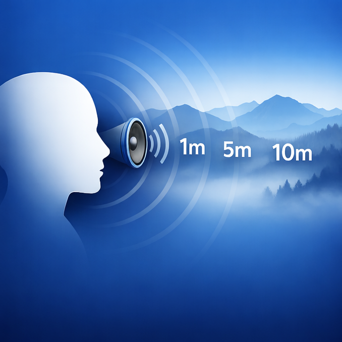
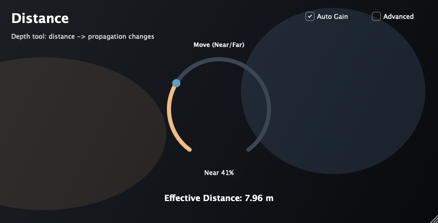

Version 1.0.1 — Out now.
Free Psychoacoustic Distance Plug-in
Distance is a free psychoacoustic distance plug-in for pushing close sounds farther back without obvious reverb. It is designed for the moments where a source needs to feel a few meters farther away, but adding reverb or dulling it with EQ makes the mix sound artificial.
Latest downloads are available for macOS 11 or later and Windows VST3. The Windows build matches version 1.0.1, and I have received reports that it works well. Windows AAX support is planned for a future release. This update may resolve an issue where the plug-in could fail to load in some environments, but this has not been fully confirmed yet.

Current release.
Previous release.
Move a vocal slightly back in the mix without relying on an obvious reverb tail.
Help dialogue, foley, or effects feel a few meters farther away in a more believable way.
Create clearer front-to-back placement when EQ and reverb alone do not quite get there.
Distance_1.0.1.pkgNote: This installer includes AAX / AU / VST3 builds that target macOS 11 or later.
Distance_1.0.1.pkg.
Email: kjdevapphelp@gmail.com
Please include: macOS version, host DAW, plug-in format, and a short description (or screenshot) of the issue.